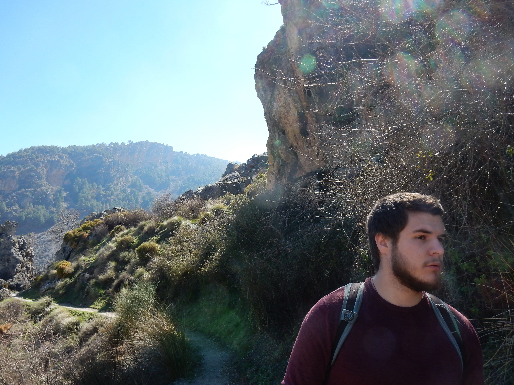
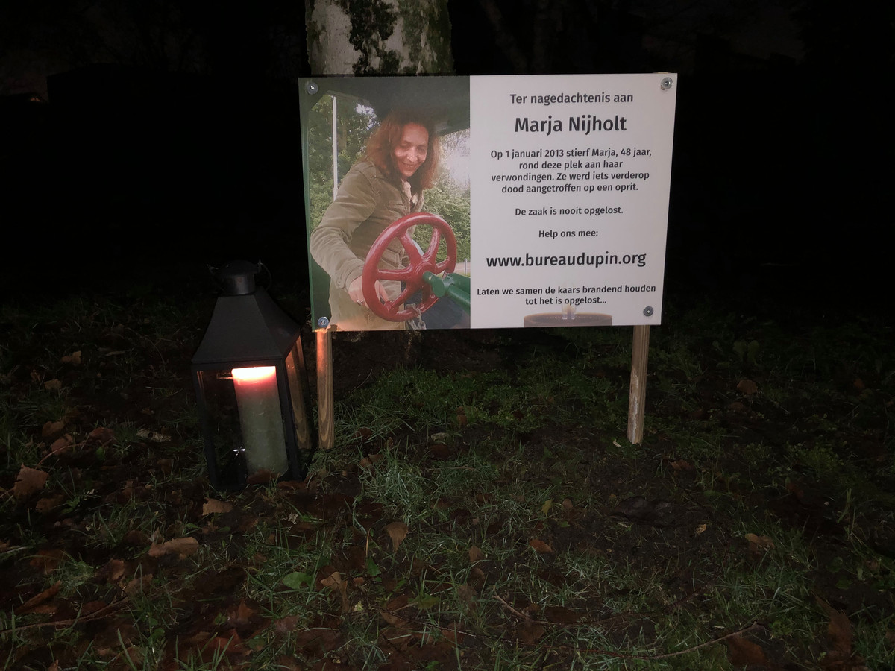
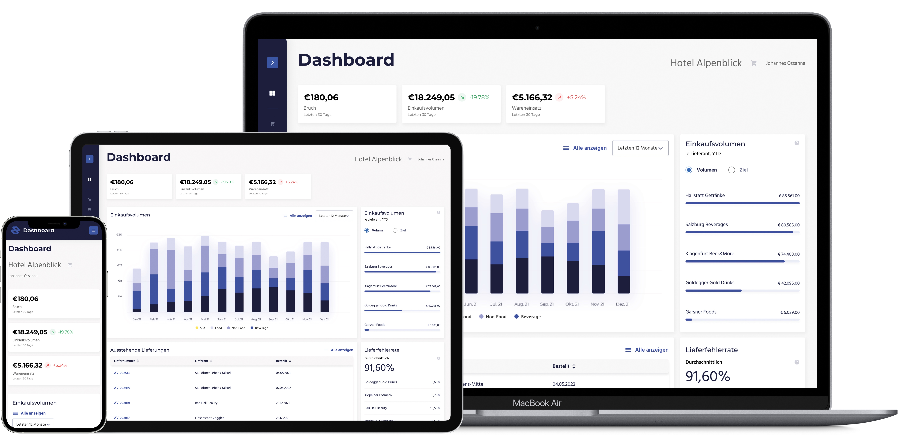
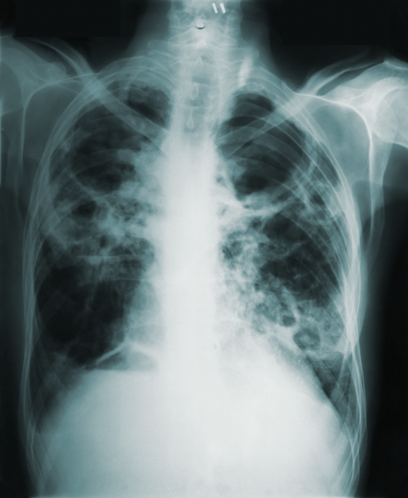

Shining a light on the dark web
Het dark web belichten
The dark web is home to marketplaces where criminals can easily sell illicit substances. We scraped one such marketplace, analyzed the data and visualized our findings.
I am Rodger van der Heijden, a pragmatic Dutch data scientist. With a background in psychology and statistics, I am very well aware of how context-dependent biases inevitably will influence your data, but also of how to most appropriately communicate findings and formulate actionable recommendations or create services that are actually being used.
Do you have unused data? Are you tired of the feeling like you're missing out on the AI hype? Let's have a look at your data and see how it can bring value to you.

They say that it's impossible to play favorites between your kids.
Fortunately, my projects are not kids.
Gelukkig zijn mijn projecten geen kinderen.
Despite the best efforts of the police and a €15.000 reward for the case-cracking tip, the investigation into the mysterious death of Marja Nijholt has long remained unsolved. As data scientist I was given access to all telecom metadata collected by the police in the original investigation and have built multiple tools that allow for systematic analysis of the data. In May 2026, Bureau Dupin found a suspect, and based on their work, the police are considering reopening the investigation.

Rote memorization with flashcards is tedious, yet diving straight into native literature is often overwhelmingly difficult. Furthermore, most language apps force you down a rigid path and fail to account for vocabulary you pick up in the real world. To take back control of the learning process, I built a language-agnostic reading platform that lets users read real stories while intelligently tracking their vocabulary. By analyzing texts on the fly and integrating contextual dictionary data, the app transforms frustrating dictionary lookups into a seamless, data-driven learning experience.
Autorities in the Netherlands have witnessed a steady increase in subversive crime over the last decades. Because subversive crime does not manifest in the same ways as 'regular' crime, law enforcement agencies have been unable to respond appropriately. When looking at the money involved that makes sense as well: organized crime syndicates are estimated to have a yearly revenue of €18.9 billion, the police gets €5.9 billion a year.
However, the Dutch government is very well aware of the ever-increasing severity of the issue, and has been taking steps to address it. Apart from stimulating collaboration between the many involved parties, more attention has been paid to developing a more complete understanding of subversive crime, its causes and where it takes place. I was commissioned to investigate whether we can predict and explain the incidence of subversive crime.
Avisio was a startup that was a competitor of FoodNotify. In fact, I got hired at FoodNotify because they read that Avisio had gone bankrupt and they needed 'a data guy'. Sadly, although big plans were being made, including a research project with the Forschungsförderungsgesellschaft (FFG), Avisio went insolvent before any big projects of me could mature.

FoodNotify aims to introduce technology in the food hospitality sector. Most notably digital stocktaking, inventory management and ordering modules, of course linked with for instance Point of Sale (PoS) data. Having narrowly escaped bankruptcy just before I joined meant that flexibility was required of the 90% new employees. As such, my role at FoodNotify varied from AI expert, data analyst, software dev, head of data team and cloud engineer.
Apart from the delight of being interim head of data and 13 Proof of Concepts I created in my time at FoodNotify, I am most proud of starting our Analytics suite and the entire cloud infrastructure (AWS) for it.

Data has frequently been heralded as the gold of the 21st century. However, interpreting data incorrectly can lead to catastrofically wrong inferences. Many small and medium-sized enterprises are experts in their domain and wonder what impact a shift towards a more data-driven approach to decision-making can have, but lack the required expertise and the funds to hire a full-time data scientist.
As a contractor I analyze data quality, investigate the potential value the available data can have, assess the limitations or drawbacks, consult on the required steps for full integration and formulate recommendations on moving forward.
The dark web is home to marketplaces where criminals can easily sell illicit substances. We scraped one such marketplace, analyzed the data and visualized our findings.
Though Duolingo and its competitors sport many features, I felt like I could implement some adjustments to provide a better learning experience for me specifically. I implemented a self-learning algorithm that matches sentences with my (evolving) language proficiency and included voice support.
Demo available.Demo beschikbaar.
Polarizing opinions are seldom developed in isolation: one's social network is an important context where extreme opinions can be cultivated. We study whether we can witness and explain why and how radically right opinions spread through a digital network with loose ties.
Kalimantan is mostly covered by rainforest. At least, for now. In collaboration with WWF and Deloitte we were given access to a data set of 325 million data points, which was being used to predict deforestation. Fortunately for the rainforest, the dataset still was very, very imbalanced.
We investigated seven resampling techniques to balance the dataset, and trained models to check for adverse effects. With a combination of undersampling and generating synthetic data points we achieved no significant loss in predictive performance while significantly speeding up training.
The keys to good public transport are good coverage and frequent availability. However, every euro can only be spent once. Demographic shifts, societal changes and updated wishes make the issue of public transport planning make for a challenging cocktail. We were provided data of a public transport route planning service and the operator of bus lines. We analyzed how the coverage and availability of public transport in smaller villages impacted the desires inhabitants have, we identified areas where the needs are not sufficiently met and suggested a method to future-proof public transport.

Research into using deep learning architectures in medical contexts has generated a lot of interest. Well-known master of data science Andrew Ng claimed to have created a model outperforming domain experts, I set out to verify (and improve) his findings. Clinical experts claim that some pathologies distinguished between in the landmark paper can only be separated by additional dossier knowledge, making the distinction based on just x-rays illogical if not outright misleading. In my attempt to fix the network I did not match the results of the original paper, though it's unsure whether that can be explained by the different approach or (much) smaller network.
What happens when you check your skin and see a new spot developing? As the largest organ of our bodies, our skin has to endure a lot. Scrapes, itches, exposure to sun and chemicals or toxins can damage your skin. Many spots on your skin turn out to be benign, but how can you know in advance? In tandem with dermatologists I studied whether nonmedical questions could allow patients to diagnose the two most common precursors of skin cancer. With just 9 questions we achieved accuracy scores of over 90%, suggesting that such a tool can be used as first check (but should definitely not replace an experts' opinion!).